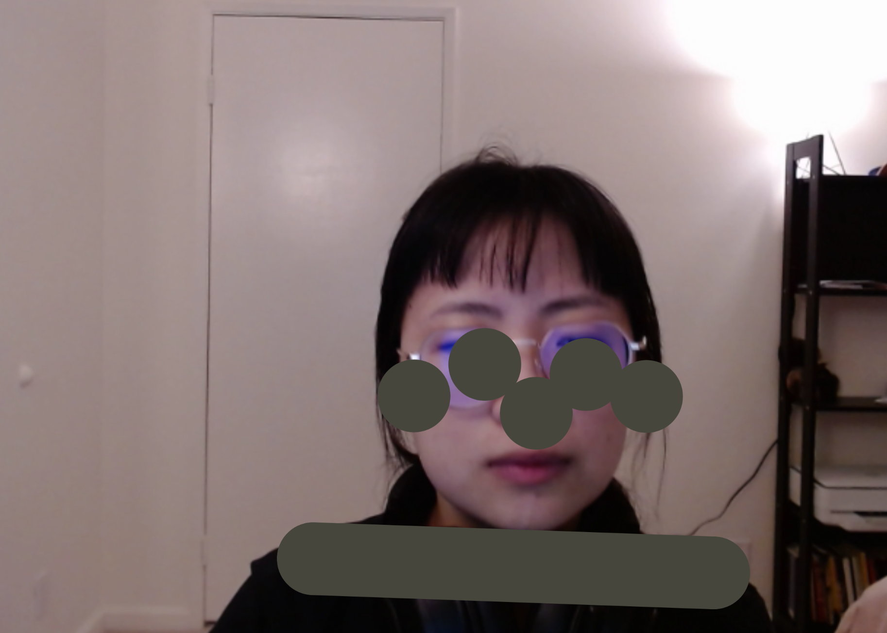
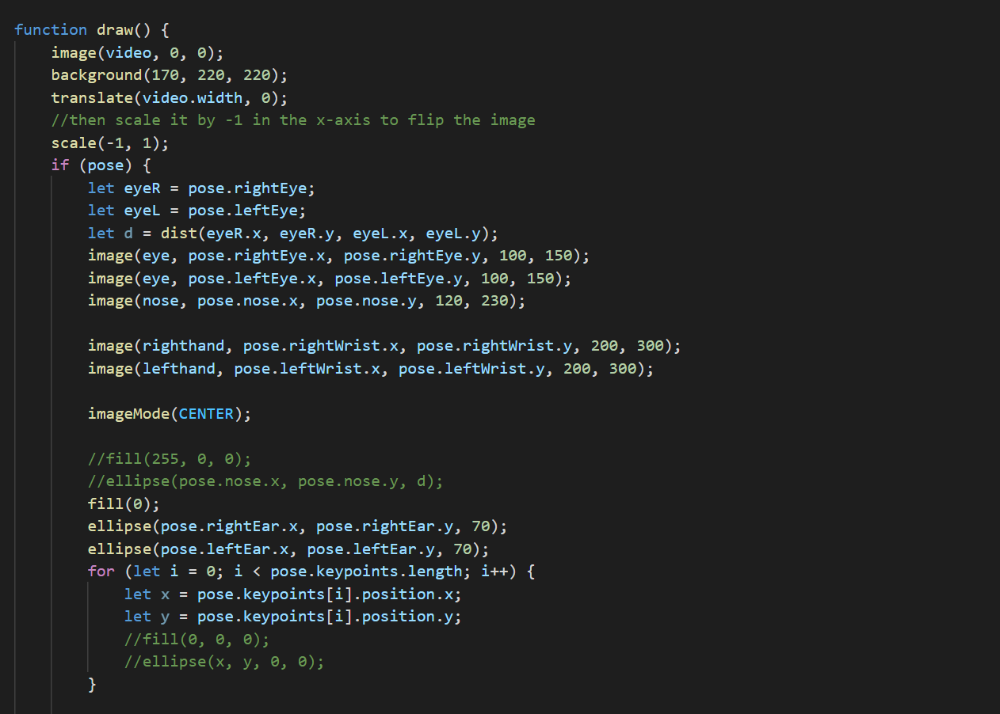

Mirror is mirror built on a webpage. If you have a Webcam, check out the webpage, and your movement will be captured and reflected on the browser window.


Through PoseNet, a skeleton tracking system offered by ml5js, I am able to track users' movement in front of webcams. I kept the key points from the motion tracking, including the person's facial features and hands. I combined these data of key points and illustrations, visualizing the data by the form of interactive posters.
Project 2: Simulation & Design
Migrating Game
October 8 - October 22, 2021
Human and nature are tightly connected, while modern civilization puts human in opposition to nature. What happens when people start to ignore their nature? What happens when they treat the world like a "game?" In this simulation, when people come to a new island, does their migrating lead to another migration happening on the island?